import pandas as pd
from sklearn import datasets # Librería utilizada para importar iris dataset
iris = datasets.load_iris() # importamos el conjunto de datos iris
iris = pd.DataFrame(iris.data, columns = iris.feature_names) # Convertimos iris a dataframeAprendizaje No Supervisado
Python
Python
Supongamos que tiene una colección de clientes con diversas características, como edad, ubicación e historial financiero, y deseas descubrir patrones y clasificarlos en grupos. O quizás tengas un conjunto de textos, como páginas de Wikipedia, y quieras segmentarlos en categorías en función de su contenido. Este es el mundo del aprendizaje no supervizado, llamado así porque no estás guiando, o supervisando, el descubrimiento de patrones mediante alguna tarea de predicción, sino descubriendo la estructura oculta a partir de datos no etiquetados. El aprendizaje no supervizado engloba diversas técnicas de aprendizaje automático, desde la agrupación hasta la reducción de dimensiones y la factorización de matrices. En este artículo, aprenderás los fundamentos de aprendizaje no supervizado e implementarás los algoritmos esenciales utilizando scikit-learn y SciPy. Aprenderás a agrupar, transformar, visualizar y extraer información de conjuntos de datos no etiquetados.
Agrupación para la exploración de conjuntos de datos
El objetivo de esta sección es aprender a descubrir los grupos subyacentes (o clústeres) en un conjunto de datos. En esta sección aprendera a agrupar empresas utilizando sus cotizaciones bursátiles,y distinguir diferentes especies agrupando sus medidas.
Aprendizaje no supervizado
El aprendizaje no supervizado es una clase de técnica de aprendizaje automático para descrubrir patrones en los datos. Por ejemplo:
Encontrar los grupos naturales de clientes en función de sus historiales de compras o buscar:
Patrones y correlaciones entre estas compras, y utilizar estos patrones para expresar los datos en forma comprimida.
Estos son ejemplos de técnicas de aprendizaje no supervizadas llamadas agrupación y reducción de dimensiones.
El aprendizaje no supervizado se define en oposición al aprendizaje supervizado.
Un ejemplo de aprendizaje supervisado es utilizar las medidas de los tumores para clasificarlos como benignos o cancerosos. En este caso, el descubrimiento de patrones es guiado o supervizado, de modo que los patrones son lo más utilies posible para predecir la etiqueta: benigno o canceroso.
El aprendizaje no supervisado, por el contrario, es un aprendizaje sin etiquetas. Es puro descubrimiento de patrones, sin la guía de una tarea de predicción.
Iris dataset
El conjunto de datos iris consta de mediciones de muchas plantas iris de tres especies diferentes:
Setosa
Versicolor
Virginica
Hay cuatro medidas:
Largo de pétalo (Petal length)
Ancho de pétalo (Petal width)
Largo de sépalo (Sepal length)
Ancho de sépalo (sepal width)
Estas son las características del conjunto de datos.
Matrices, características y muestras
Conjuntos de datos como este (iris) se escribiran como matrices numerosas bidimensionales.
Las columnas de la matriz corresponderán a las características.
Las medidas de plantas individuales son las muestras del conjunto de datos, estas corresponden a filas de la matriz.
Iris datases es 4-dimensional
Las muestras del conjunto de datos iris tienen cuatro medidas y, por lo tanto, corresponden a puntos en un espacio de cuatro dimensiones. Es decir:
- Dimensiones = número de características o features.
No podemos visualizar cuatro dimensiones directamente, pero utilizando técnicas de aprendizaje no supervizado aún podemos obtener información.
K-Means Clustering
Agruparemos estas muestras utilizando la agrupación de k-Means. K-Means encuentra un número específico de grupos en las muestras. Está implementado en la biblioteca de scikit-learn o sklearn.
Veamos KMeans en acción con el conjunto de datos iris.
Para comenzar:
Importamos KMeans de scikit-learn.
Luego creamos un modelo KMeans, especificando la cantidad de clústeres que deseamos encontrar con
n_clustersespecificamos n_cluster = 3, ya que hay tres especies de iris.Posteriormente, llamamos el método de ajuste del modelo
.fit(), pasando la matriz del iris dataset. Esto ajusta el modelo a los datos, localizando y recordando las regiones donde ocurren los diferentes grupos.Por último, podemos utilizar el método de predicción del modelo en este mismo conjunto de datos.
from sklearn.cluster import KMeans
model = KMeans(n_clusters = 3, random_state = 42)
model.fit(iris)KMeans(n_clusters=3, random_state=42)In a Jupyter environment, please rerun this cell to show the HTML representation or trust the notebook.
On GitHub, the HTML representation is unable to render, please try loading this page with nbviewer.org.
KMeans(n_clusters=3, random_state=42)
labels = model.predict(iris)
print(labels)[1 1 1 1 1 1 1 1 1 1 1 1 1 1 1 1 1 1 1 1 1 1 1 1 1 1 1 1 1 1 1 1 1 1 1 1 1
1 1 1 1 1 1 1 1 1 1 1 1 1 0 2 0 2 2 2 2 2 2 2 2 2 2 2 2 2 2 2 2 2 2 2 2 2
2 2 2 0 2 2 2 2 2 2 2 2 2 2 2 2 2 2 2 2 2 2 2 2 2 2 0 2 0 0 0 0 2 0 0 0 0
0 0 2 2 0 0 0 0 2 0 2 0 2 0 0 2 2 0 0 0 0 0 2 0 0 0 0 2 0 0 0 2 0 0 0 2 0
0 2]Esto nos devuelve una etiqueta de grupo para cada muestra, que indica a qué grupo pertenece una muestra.
Etiquetas de clúster para nuevas muestras
Si alguien viene con un algún dataset iris nuevo, kMeans puede determinar a qué grupos pertenecen sin tener que empezar de nuevo.
KMeans hace esto recordando la media (o promedio) de las muestras en cada grupo. Estos se llaman centroides se asignan nuevas muestras al grupo cuyo centroide esté más cercano.
Voy a tomar 3 registros aleatorios del dataset iris y asumiremos que estas son muestras nuevas.
new_samples = iris.sample(n = 3, random_state = 42)
print(new_samples) sepal length (cm) sepal width (cm) petal length (cm) petal width (cm)
73 6.1 2.8 4.7 1.2
18 5.7 3.8 1.7 0.3
118 7.7 2.6 6.9 2.3Para asignar las nuevas muestras a los grupos existentes, pasaremos el conjunto de nueva muestra al método de predicción del modelo kmeans.
new_labels = model.predict(new_samples)
print(new_labels)[2 1 0]Como puede observar, esto devuelve las etiquetas de grupo para los datos nuevos o muestra de datos nueva.
En la siguiente sección aprenderá cómo evaluar la calidad de su agrupación.
Scatter Plots
Por ahora, visualizaremos nuestra agrupación de las muestras de iris usando diagramas de dispersión. A continuación se muestra un diagrama de dispersión de la longitud del sépalo frente a la longitud del pétalo del dataset iris.
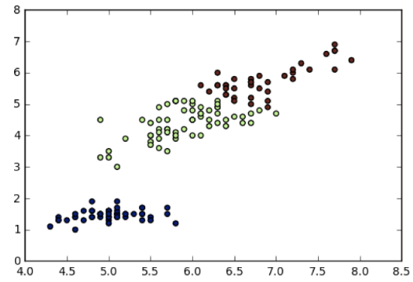
Cada punto representa una muestra de iris y está coloreada según el grupo de la muestra. Para crear un diagrama de dispersión como este, usaremos PyPlot.
La longitud del sépalo está en la columna 0 de la matriz iris, mientras que la longitud de los pétalos está en la segunda columna.
Y labels o etiquetas que encontramos previamente lo usamos para colorear por etiqueta de clúster como un paramétro en
.scatter().
import matplotlib.pyplot as plt
xs = iris.iloc[:, 0] # Longitud de los sépalos
ys = iris.iloc[:, 2] # Longitud de los pétalos
plt.scatter(xs, ys, c = labels)
plt.show()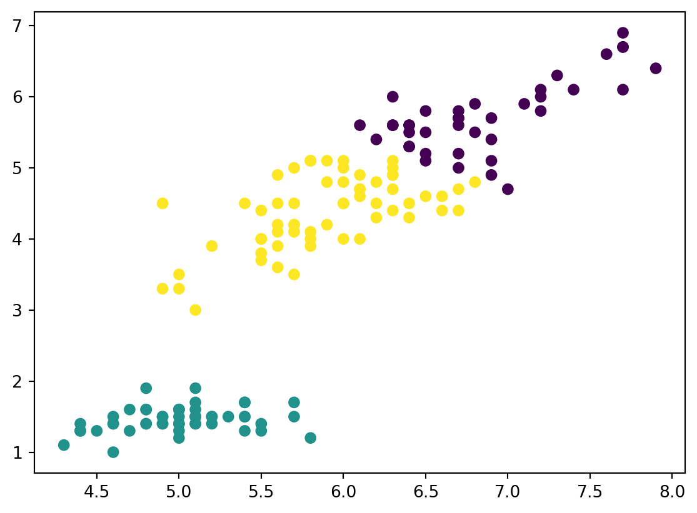
Ahora, calculemos las coordenadas de los centroides utilizando el atributo .cluster_centers_ de model. y asignaremos la columna 0 de centroids a centroids_x, y la columna 2 de centroids a centroids_y. Posterior a ello, realizaremos un diagrama de dispersión de centroids_x y centroids_y, utilizando marker = 'D' (un rombo) como marcador especificando el parámetro marker. El tamaño de los marcadores en 50 utilizando s = 50.
xs = iris.iloc[:, 0] # Longitud de los sépalos
ys = iris.iloc[:, 2] # Longitud de los pétalos
plt.scatter(xs, ys, c = labels, alpha = 0.5)
centroids = model.cluster_centers_
centroids_x = centroids[:,0]
centroids_y = centroids[:,2]
plt.scatter(centroids_x, centroids_y, marker = 'D', s = 50)
plt.show()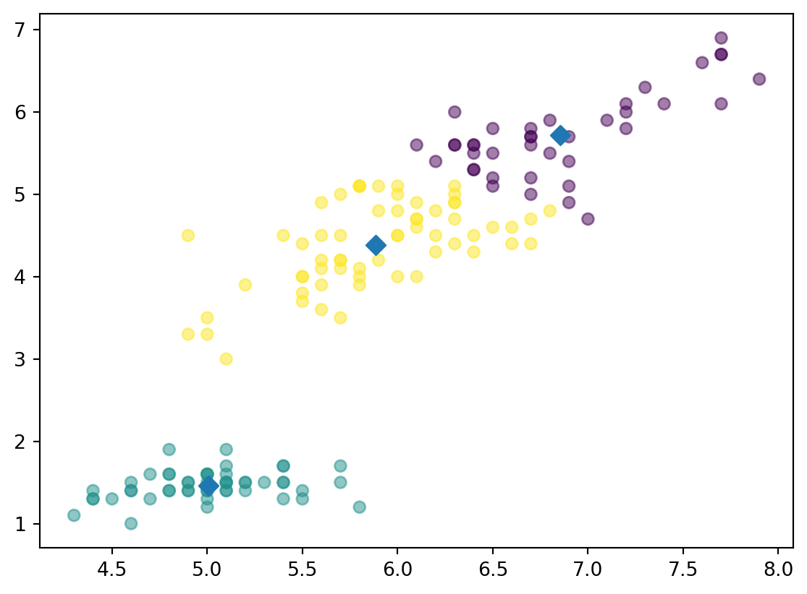
Evaluar una agrupación
En la sección anterior, utilizamos KMeans para agrupar el dataset de iris en tres grupos. Pero ¿cómo podemos evaluar la calidad de esta agrupación?
Un enfoque directo es comparar los grupos con las especies de iris. Primero aprenderá sobre esto, antes de considerar el problema de cómo medir la calidad de una agrupación de una manera que no requiera que nuestras muestras vengan preagrupadas en especies. Esta medida de calidad puede utilizarse más adelante para tomar una decisión informada sobre el número de conglomerados a buscar.
Iris: Clusters vs Especies
En primer lugar, comprobemos si los 3 grupos de muestras de iris tienen alguna correspondencia con la especie de iris.
La correspondencia se describe en esta tabla:
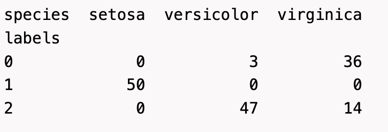
Existe una columna para cada una de las tres especies de iris: setosa, versicolor y virginica, y una fila para cada una de las tres etiquetas de grupo: 0, 1 y 2.
La tabla muestra el número de muestras que tienen cada combinación posible de etiquetas de grupo/especie. Por ejemplo:
Vemos que el grupo 0 se corresponde perfectamente con la especie setosa.
Por otro lado, mientras que el cluster 1 contiene principalmente muestras de virginica en el grupo 2.
Tablass como esta, se denominan tabulaciones cruzadas o Cross tabulation
Cross Tabulation con Pandas
Para construir uno, usareos la biblioteca pandas. Como podemos observar en el bloque de código siguiente, creamos un dataframe de dos columnas, donde la primera columna son las etiquetas del grupo y la segunda son las especies de iris, de modo que cada fila proporciona la etiqueta del grupo y la especie de una sola muestra.
iris_raw = datasets.load_iris()
iris = pd.DataFrame(iris_raw.data, columns = iris_raw.feature_names)
# Agregamos columna de especie verdadera al dataframe iiris
species = pd.Categorical.from_codes(iris_raw.target, iris_raw.target_names)
#
df = pd.DataFrame({'labels':labels, 'species':species})
print(df) labels species
0 1 setosa
1 1 setosa
2 1 setosa
3 1 setosa
4 1 setosa
.. ... ...
145 0 virginica
146 2 virginica
147 0 virginica
148 0 virginica
149 2 virginica
[150 rows x 2 columns]Ahora usamos la función de tabla cruzuda de pandas para crear la tubulación cruzada, pasando las dos columnas del DataFrame.
ct = pd.crosstab(df['labels'], df['species'])
print(ct)species setosa versicolor virginica
labels
0 0 3 36
1 50 0 0
2 0 47 14Tabulaciones cruzadas como estás proporcionan información valiosa sobre qué tipo de muestras se encuentran en qué grupo. Pero la mayoría de los conjuntos de datos, las muestras no están etiquetadas por especie.
¿Cómo se puede evaluar la calidad de un clustering en estos casos?
Medición de la calidad de la agrupación
Una buena agrupación tiene grupos compactos, lo que significa que las muestras de cada grupo están agrupadas, no dispersas.
La inercia puede medir la distribución de las muestras dentro de cada grupo. Intuitivamente, la inercia mide qué tan lejos están las muestras de sus centroides. Puede encontrar la definición precisa en la documentación de scikit-learn. Queremos grupos que no estén dispersos, por lo que los valores más bajos de inercia son mejores.
La inercia de un modelo KMeans se mide automaticamente cuando se llama al metodo de ajuste .fit y luego están disponibles como atributos de inertia_.
De hecho, KMeans pretende colocar los clusters de forma que se minimice la inercia.
model = KMeans(n_clusters = 3, random_state = 42)
model.fit(iris)
print(model.inertia_)78.8556658259773A continuación se muestra un gráfico de los valores de inercia de las agrupaciones del conjunto de datos de iris con diferentes números de agrupaciones.
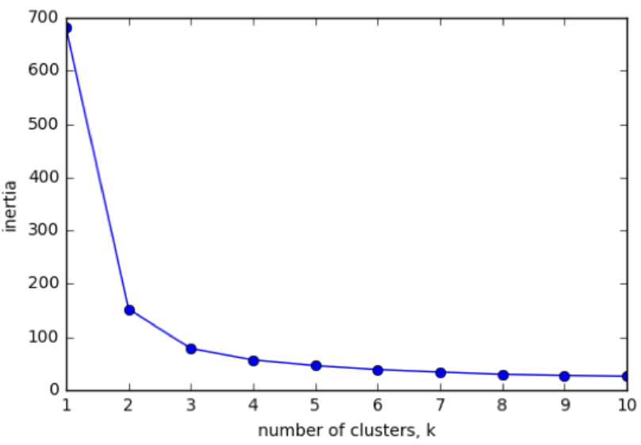
Nuestro modelo KMeans con 3 grupos tiene una inercia relativamente baja, lo cual es genial. Pero observe que la incercia continúa disminuyendo lentamente. Entonces, ¿cuál es la mejor cantidad de clústeres para elegir? En última instacia se trata de una compensación.
Una buena agrupación tiene agrupaciones estrechas (lo que significa inercia baja). Pero tampoco tiene demasiados grupos.
Una buena regla general es elegir un codo en el gráfico de inercia, es decir, un punto donde la inercia comienza a disminuir más lentamente.
Por ejemplo, según este criterio, 3 es un buen número de grupos para el conjunto de datos del iris.
ks = range(1, 11)
inertias = []
for k in ks:
model = KMeans(n_clusters=k, random_state=42)
model.fit(iris)
inertias.append(model.inertia_) # suma de distancias cuadradas intracluster
plt.plot(ks, inertias, '-o')
plt.xlabel('número de clusters')
plt.ylabel('inertia')
plt.xticks(ks)
plt.show()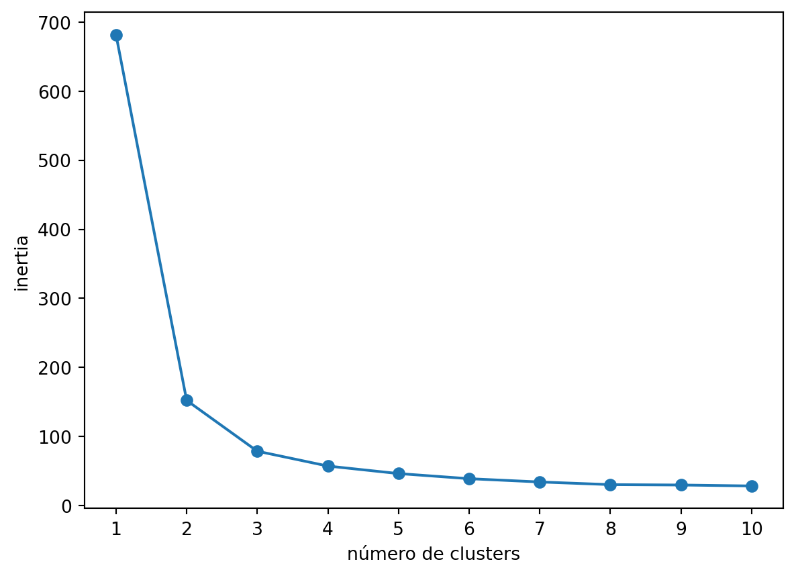
Transformación de Características para mejorar agrupaciones
Veamos ahora otro conjunto de datos, el conjunto de datos de los vinos del Piamonte.
Disponemos de 178 muestras de vino tinto de la región de Piamonte de Italia.
Las entradas o features miden la composición química (como el contendio del alcohol) y propiedades visuales como la intensidad del color.
Las muestras proceden de 3 variedades distintas de vino.
samples = pd.read_csv("wine.csv")
varieties = samples['class_name']
samples = samples.drop("class_name", axis = 1)
samples| class_label | alcohol | malic_acid | ash | alcalinity_of_ash | magnesium | total_phenols | flavanoids | nonflavanoid_phenols | proanthocyanins | color_intensity | hue | od280 | proline | |
|---|---|---|---|---|---|---|---|---|---|---|---|---|---|---|
| 0 | 1 | 14.23 | 1.71 | 2.43 | 15.6 | 127 | 2.80 | 3.06 | 0.28 | 2.29 | 5.64 | 1.04 | 3.92 | 1065 |
| 1 | 1 | 13.20 | 1.78 | 2.14 | 11.2 | 100 | 2.65 | 2.76 | 0.26 | 1.28 | 4.38 | 1.05 | 3.40 | 1050 |
| 2 | 1 | 13.16 | 2.36 | 2.67 | 18.6 | 101 | 2.80 | 3.24 | 0.30 | 2.81 | 5.68 | 1.03 | 3.17 | 1185 |
| 3 | 1 | 14.37 | 1.95 | 2.50 | 16.8 | 113 | 3.85 | 3.49 | 0.24 | 2.18 | 7.80 | 0.86 | 3.45 | 1480 |
| 4 | 1 | 13.24 | 2.59 | 2.87 | 21.0 | 118 | 2.80 | 2.69 | 0.39 | 1.82 | 4.32 | 1.04 | 2.93 | 735 |
| ... | ... | ... | ... | ... | ... | ... | ... | ... | ... | ... | ... | ... | ... | ... |
| 173 | 3 | 13.71 | 5.65 | 2.45 | 20.5 | 95 | 1.68 | 0.61 | 0.52 | 1.06 | 7.70 | 0.64 | 1.74 | 740 |
| 174 | 3 | 13.40 | 3.91 | 2.48 | 23.0 | 102 | 1.80 | 0.75 | 0.43 | 1.41 | 7.30 | 0.70 | 1.56 | 750 |
| 175 | 3 | 13.27 | 4.28 | 2.26 | 20.0 | 120 | 1.59 | 0.69 | 0.43 | 1.35 | 10.20 | 0.59 | 1.56 | 835 |
| 176 | 3 | 13.17 | 2.59 | 2.37 | 20.0 | 120 | 1.65 | 0.68 | 0.53 | 1.46 | 9.30 | 0.60 | 1.62 | 840 |
| 177 | 3 | 14.13 | 4.10 | 2.74 | 24.5 | 96 | 2.05 | 0.76 | 0.56 | 1.35 | 9.20 | 0.61 | 1.60 | 560 |
178 rows × 14 columns
Clustering con Vinos
Tomaremos la matriz de muestra de los vinos y usaremos KMeans para encontrar 3 grupos
model = KMeans(n_clusters = 3, random_state = 42)
labels = model.fit_predict(samples)Cluster vs Varieties
Hay tres variedades de vinom así que usamos pandas para crear la tabla cruzada para comprobar las correspondencia entre la etiqueta del clúster y la variedad de vino.
df = pd.DataFrame({'labels': labels, 'varieties':varieties})
ct = pd.crosstab(df['labels'], df['varieties'])
print(ct)varieties Barbera Barolo Grignolino
labels
0 37 1 64
1 11 31 7
2 0 27 0Como podemos ver, esta vez las cosas no han salido tan bien. Los clusters KMeans no se corresponden bien con las variedades de vino.
Variación de Características
El problema es que las características del conjunto de datos del vino tiene variaciones muy diferentes.
La varianza de una característica mide la dispersión de sus valores
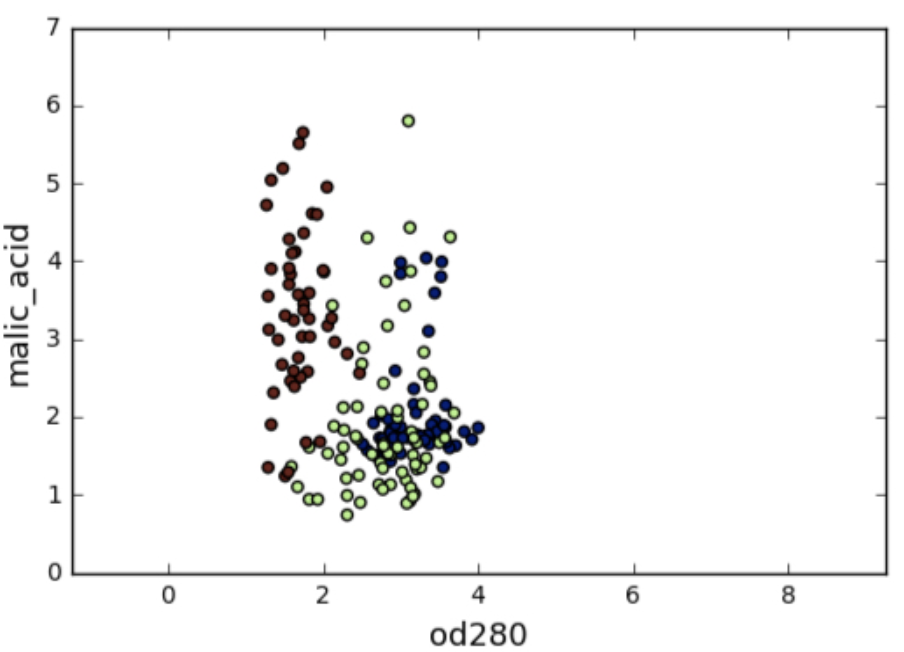
Por ejemplo, la característica del ácido málico (malic_acid) tiene una mayor varianza que la característica 0d280, y esto también se puede ver en su diagrama de dispersión.
Las diferencias en algunas de las variaciones de características son enormes, por ejmplo, en el diagrama de dispersión de características od280 y prolina.
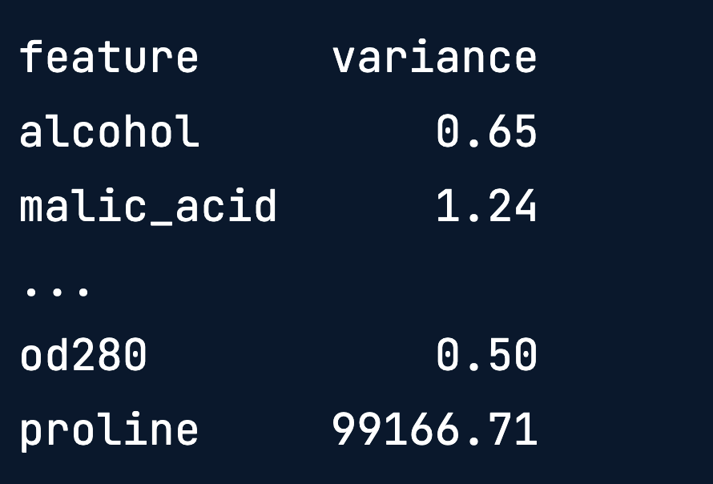
StandarScaler
En la agrupación en clústeres de KMeans, la varianza de una característica corresponde a su influencia en el algoritmo de agrupación en clústeres. Es decir:
Varianza de Carasterística = Influencia de Característica
Para darle una oportunidad a cada característica, los datos deben transformarce para que las características tengan la misma varianza. Esto se puede lograr con el StandarScaler de scikit-learn. Transforma cada característica para que tenga media 0 y varianza 1.
Las características estandarizadas resultantes pueden ser muy informativas.
Si utilizamos, por ejemplo, los valores estandarizados de od280 y proline, las tres variedades de vino son mucho más distintas.
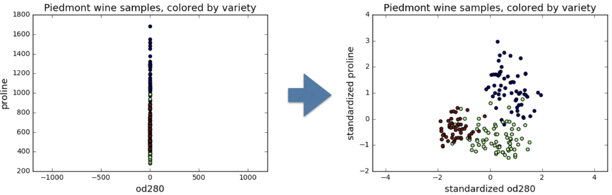
Veamos StandarScaler en acción:
from sklearn.preprocessing import StandardScaler
scaler = StandardScaler() # Creamos el objeto StandarScaler
scaler.fit(samples)
StandardScaler(copy = True, with_mean = True, with_std = True)
samples_scaled = scaler.transform(samples)El método de transformación ahora se puede utilizar para estandarizar cualquier muestra, ya sean las mismas o completamente nuevas.
Métodos similares
Las API de StandarScaler y KMeans son similares, pero hay una diferencia importante:
StandardScaler transforma datos y por eso tiene un método de transformación.
KMeans por el contrario, asigna etiquetas de clúster a las muestras y esto se hace utilizando el método de predicción.
StandardScaler luego KMeans
Volvamos al problema del agrupamiento de los vinos. Necesitamos realizar dos pasos:
Estandarizar los datos utilizando StandardScaler y
Tomar los datos estandarizados y agruparlos utilizando KMeans
Esto se hace fácilmente combinando los dos pasos mediante un pipeline de scikit-learn, luego, los datos fluyen de un paso al siguiente de forma automática.
Pipelines combinando multiples pasos
from sklearn.preprocessing import StandardScaler
from sklearn.cluster import KMeans
from sklearn.pipeline import make_pipeline
scaler = StandardScaler()
kmeans = KMeans(n_clusters = 3, random_state = 42)
# Aplicamos los pasos que queremos combinar
pipeline = make_pipeline(scaler, kmeans)
pipeline.fit(samples)
# Utilizamos el método de predicción para obtener las etiquetas del clúster
labels = pipeline.predict(samples)Ahora, realicemos la comprobación de la correspondencia entre las etiquetas de los cluster y las variedadesd de vino
df = pd.DataFrame({'labels': labels, 'varieties':varieties})
ct = pd.crosstab(df['labels'], df['varieties'])
print(ct)varieties Barbera Barolo Grignolino
labels
0 0 0 67
1 48 0 1
2 0 59 3Y como podemos observar, esto nos revela que al incorporar estandarización la nueva agrupación es fantástica. Sus tres clúster corresponden casi exactamente a las tres variedades de vino. Por tanto, esto es una gran mejora con respecto a la agrupación sin estandarización.
StandardScaler es un ejemplo de un paso de preprocesamiento. Existen varios de estos disponibles en Scikit-Learn, por ejemplo, MaxAbsScaler y Normalizer.
Visualización con agrupamiento Jerárquico y t-SNE
En este capítulo, aprenderás dos técnicas de aprendizaje no suprvisado para la visualización de datos: la agrupación jerárquica y t-SNE.
La agrupación jerárquica fusiona las muestras de datos en grupos cada vez más amplios, lo que da como resultado una visualización en forma de árbol de la jerarquía de grupos resultantes.
t-SNE mapea las muestras de datos en un espacio bidimensional para que se pueda visualizar la proximidad antre ellas.
Visualizar Jerarquías
Una gran parte del trabajo de cualquier cientifico de datos es la comunicación de los resultados o conocimiento a otras personas. Las visualizaciones son una excelente manera de compartir sus hallazgos especialmente con una audiencia no técnica. En este nuevo capítulo, aprenderá sobre dos métodos de aprendizaje no supervisado correspondientes a visualización:
t-SNE
Agrupamiento Jerárquico
t-SNE, que lo veremos más adelante, crea un mapa 2D de cualquier conjunto de datos y transmite información útil sobre la proximidad de las muestras entre sí. Pero primero aprendamos sobre la agrupación jerárquica.
Ya has visto muchas agrupaciones jerárquicas en el mundo real. Por ejemplo, los seres vivos pueden organizarse en grupos pequeños y estrechos como los humanos, los simios, las serpientes y los lagartos, o en grupos más grandes y amplios, como los mamíferos y los reptiles, o incluso grupos más amplios, como los animales y las plantas. Como puede visualizar en la figura de abajo, estos grupos están contenidos unos dentro de otros y forman una jerarquía.
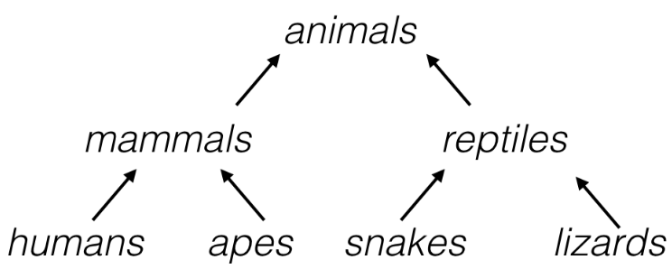
De manera análoga, la agrupación jerárquica organiza las muestras en una jerarquía de grupos.
La agrupación jerárquica puede organizar cualquier tipo de datos en una jerarquía, no sólo muestras de plantas y animales.
Dataset de scoring Eurovision
Consideremos un nuevo tipo de conjunto de datos que describe cómo los países calificaron sus actuaciones en el Festival de la Canción de Eurovisión 2016. Los datos se organizan en una matriz rectangular, donde las filas de la matriz muestra cuántos puntos le dio un país a cada canción.
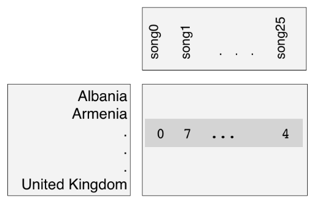
Las muestras en este caso son los países. El resultado de aplicar la agrupación jerárquica al Festival de Eurovisión:
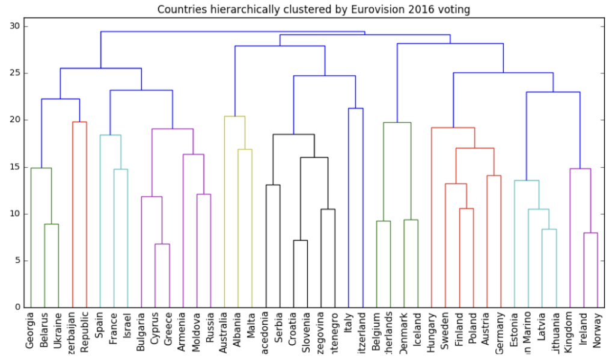
Las puntuaciones se pueden visualizar como u diagrama en forma de árbol llamado dendrograma. Esta única imagen revela mucha información sobre el comportamiento electoral de los países en Eurovisión. El dendrograma agrupa a los países en grupos cada vez más grandes, y muchos de ellos los grupos se reconocen inmediatamente como compuestos por países cercanos entre si geográficamente, o que tienen estrechos vínculos culturales o político, o que pertenecen a un solo grupo linguístico. De esta manera, la agrupación jerárquica puede generar excelentes visualizaciones. ¿Pero cómo funciona?
La agrupación jerárquica se realiza en pasos:
Al principio cada país es su propio clúster,por lo que hay tantos clústeres como países.
En cada paso se fusionan los dos clústeres más cercanos. Esto disminuye el número de clústeres, y
Al final, sólo queda un grupo, que contiene todos los países.
Este proceso es en realidad un tipo particular de agrupamiento jerárquico llamdo agrupamiento aglomerativo, también existe el agrupamiento divisivo, que funciona a la inversa.
Aún no hemos definido qué significa que dos clústeres estén cerca, pero volveremos a abordar este tema más adelante.
Dendrograma de una Clusterización Jerárquica
Todo el proceso de agrupamiento jerárquico está codificado en el dendrograma.
En la parte inferior, cada país se encuentra en un grupo propio. Luego el agrupamiento continúa desde abajo hacia arriba.
Los grupos se representan como líneas verticales y una unión de líneas verticales indica una fusión de grupos.
Para comprender mejor, hagamos un acercamiento:
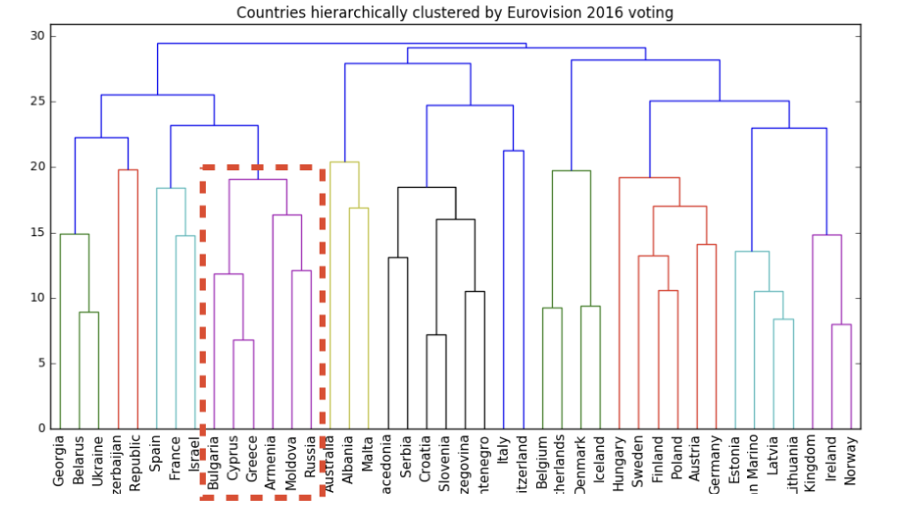
Observemos sólo una parte de este dendrograma,
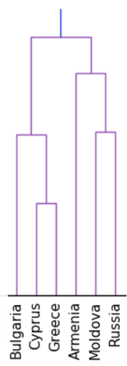
Al principio hay seis grupos , cada uno de los cuales contiene sólo un país. La primera fusión se produce aquí:
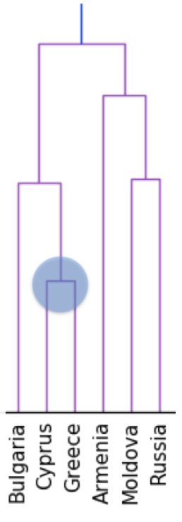
donde los grupos que contienen a Cyprus y Grecia se fusionan en un solo grupo. Posteriormente, este nuevo clúster se fusiona con el clúster que contiene Bulgaria:
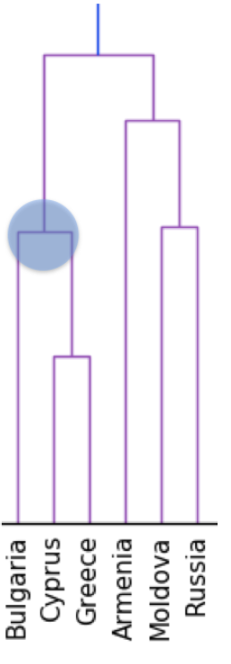
Poco después, los grupos que incluyen a Moldova y Rusia son fusionados,
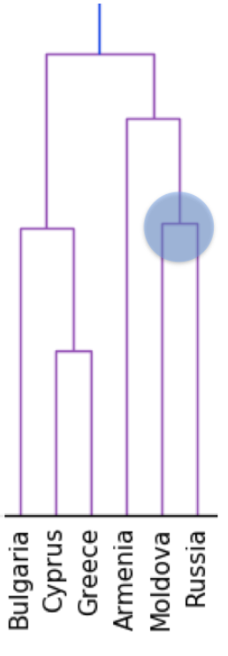
que más tarde a su vez se fusiona con el grupo que contiene Armenia.

Más tarde aún, los dos grupos compuestos se fusionan, Este proceso continua hasta que sólo quede un grupo, y éste contenga todos los países.
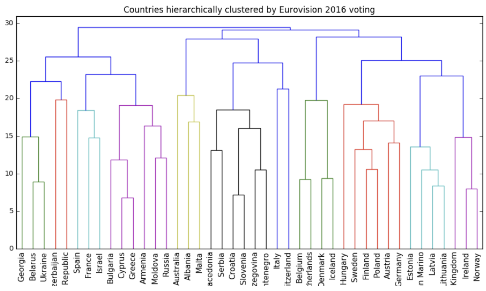
Clusterización Jerárquica con SciPy
En el capítulo anterior, utilizamos la agrupación KMeans para agrupar empresas según los movimientos de sus cotizaciones bursátiles. Ahora, realizaremos la agrupación jerárquica de las empresas.
linkage() de SciPy realiza una agrupación jerárquica en una matriz de muestras.
import matplotlib.pyplot as plt
from scipy.cluster.hierarchy import linkage, dendrogram
from sklearn.preprocessing import normalize
import numpy as np
empresas = pd.read_csv("/Users/juanisaulamejia/Documents/webmathJI/posts/Unsupervised_Learning/empresas.csv")
companies = samples.iloc[:, 0].tolist()
empresas = samples.select_dtypes(include="number").copy()
arr = samples.to_numpy()
normalized_movements = normalize(arr)
mergings = linkage(normalized_movements, method = 'complete')
dendrogram(mergings, labels = companies,
leaf_rotation = 90,
leaf_font_size = 6)
plt.show()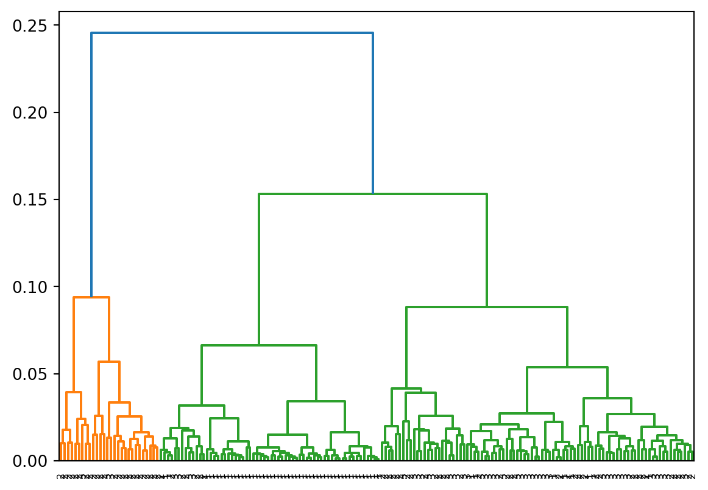
Como podemos observar, podemos crear visualizaciones geniales como esta con el clustering jerárquico, pero se puede usar ara más que solo visualizaciones.